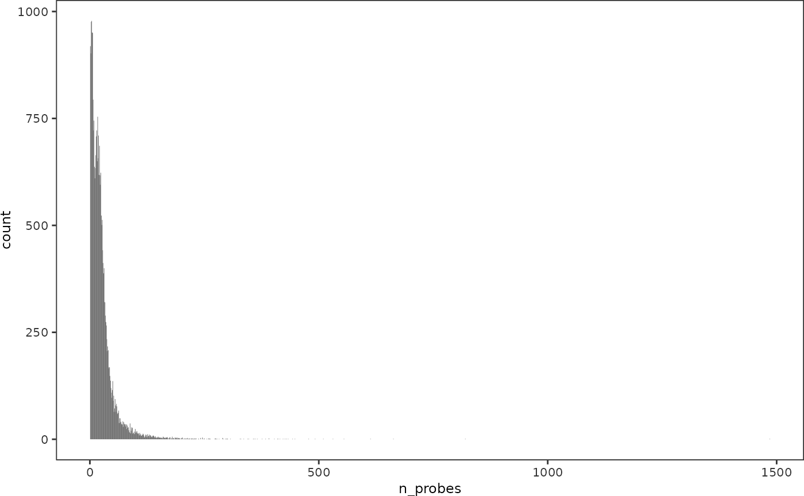

Copynumber
copynumber.Rmd
library(intratumormeth)
# paths
outputDir <- "~/sfb824/packagepdgfra_output"
inputDir <- "~/sfb824/packagepdgfra_input"In this vignette, the package conumee (Hovestadt and Zapatka 2017) will be used to derive copy number profiles from the methylation intensity data. The resulting data will be further post-processed to facilitate downstream analysis.
Required data
In addition to sample methylation data, conumee requires methylation data of control samples with a flat genome. This reference data was kindly provided by Dr. Martin Sill from DKFZ. Furthermore, an annotation object has to be passed to conumee which tells the package which genomic regions should be evaluated. By means of the annotation object, a number of detail regions can be specified for which dedicated copy number values will be computed. For this study, all gene loci that are covered by at least 20 CpG probes on the EPIC array will be specified as detail regions.
Since different annotation and reference objects will be used for male and female samples, information about the patient sex is required. This is contained in patientsheet.
Load samplesheet and patientsheet:
samplesheet <- read.csv("~/sfb824/packagepdgfra_input/samplesheet.csv")
samplesheet %>% head()
#> sample_id patient_id idat_location
#> 1 sfb01_1 sfb01 ~/data/methylation_data/Pat01.1/202212330261_R07C01
#> 2 sfb01_2 sfb01 ~/data/methylation_data/Pat01.2/202242420132_R07C01
#> 3 sfb01_3 sfb01 ~/data/methylation_data/Pat01.3/202212330261_R06C01
#> 4 sfb02_1 sfb02 ~/data/methylation_data/Pat02.1/202242420132_R02C01
#> 5 sfb02_2 sfb02 ~/data/methylation_data/Pat02.2/202242420132_R06C01
#> 6 sfb02_3 sfb02 ~/data/methylation_data/Pat02.3/202242420132_R01C01
#> project
#> 1 SFB824
#> 2 SFB824
#> 3 SFB824
#> 4 SFB824
#> 5 SFB824
#> 6 SFB824
patientsheet <- read.csv(file.path(inputDir, "patientsheet.csv"))
patientsheet %>% head()
#> patient_id n_samples sex age
#> 1 GU-HGG-154 4 m NA
#> 2 GU-HGG-182 3 m NA
#> 3 GU-HGG-185 3 m NA
#> 4 GU-HGG-200 3 f NA
#> 5 GU-HGG-204 3 f NA
#> 6 GU-HGG-216 3 f NAPrepare a custom conumee annotation
The conumee annotation object can be generated by specifying start and stop coordinates of genomic regions for which a detailed output is desired. The start and stop coordinates of these detail regions will be extracted from the EPIC probes annotation.
library(minfi)
library(conumee)
library(IlluminaHumanMethylationEPICanno.ilm10b4.hg19)
annoEpic <- getAnnotation(IlluminaHumanMethylationEPICanno.ilm10b4.hg19) %>%
as.data.frame()This codeblock groups the probes by their associated genes and extracts positions of first and last probe for a given gene.
genesEpic <- annoEpic %>%
dplyr::filter(UCSC_RefGene_Name != "") %>%
dplyr::mutate(gene = stringr::str_split(UCSC_RefGene_Name, ";")) %>%
tidyr::unnest(cols = c(gene)) %>%
dplyr::group_by(chr, gene) %>%
dplyr::summarise(from = min(pos),
to = max(pos),
n_probes = length(unique(Name)),
contexts = paste(unique(unlist(stringr::str_split(UCSC_RefGene_Group, ";"))), collapse = ";"),
.groups = "drop")
genesEpic %>% head()
#> # A tibble: 6 × 6
#> chr gene from to n_probes contexts
#> <chr> <chr> <int> <int> <int> <chr>
#> 1 chr1 A3GALT2 33776046 33787381 12 Body;TSS200;TSS1500
#> 2 chr1 AADACL3 12774815 12787380 12 Body;5'UTR;1stExon;TSS200;TSS1500;…
#> 3 chr1 AADACL4 12703392 12727093 17 TSS1500;Body;1stExon;TSS200;3'UTR
#> 4 chr1 ABCA4 94458645 94587905 75 TSS1500;1stExon;5'UTR;Body;ExonBnd…
#> 5 chr1 ABCB10 229655141 229695511 27 TSS1500;TSS200;Body
#> 6 chr1 ABCD3 94882585 94983186 24 TSS1500;1stExon;Body;TSS200;3'UTR;…How many probes are there per gene?
library(ggplot2)
ggplot(genesEpic, aes(x = n_probes)) +
geom_histogram(binwidth = 1) +
intratumormeth_theme()
Keep only genes with at least 20 probes coverage:
minProbesPerGene <- 20
detailGenes <- genesEpic %>%
dplyr::filter(n_probes >= minProbesPerGene) %>%
# rename potentially duplicate names by adding the chromosome as a suffix
dplyr::mutate(gene = dplyr::case_when(gene %in% .$gene[duplicated(.$gene)] ~ paste0(gene, "_", chr),
TRUE ~ gene))
detailRegions <- GenomicRanges::GRanges(seqnames = detailGenes$chr,
ranges = IRanges::IRanges(start = detailGenes$from, end = detailGenes$to),
name = detailGenes$gene,
# thick specifies the plotting window for detail plots
thick = IRanges::IRanges(start = detailGenes$from - 5000, end = detailGenes$to + 5000),
seqinfo = GenomeInfoDb::Seqinfo(genome = "hg19"))
detailRegions
#> GRanges object with 12724 ranges and 2 metadata columns:
#> seqnames ranges strand | name thick
#> <Rle> <IRanges> <Rle> | <character> <IRanges>
#> [1] chr1 94458645-94587905 * | ABCA4 94453645-94592905
#> [2] chr1 229655141-229695511 * | ABCB10 229650141-229700511
#> [3] chr1 94882585-94983186 * | ABCD3 94877585-94988186
#> [4] chr1 179069967-179200312 * | ABL2 179064967-179205312
#> [5] chr1 76188832-76215992 * | ACADM 76183832-76220992
#> ... ... ... ... . ... ...
#> [12720] chrX 134419896-134479169 * | ZNF75D 134414896-134484169
#> [12721] chrY 16634027-16945913 * | NLGN4Y 16629027-16950913
#> [12722] chrY 9194502-9366496 * | TSPY4 9189502-9371496
#> [12723] chrY 21154291-21240028 * | TTTY14 21149291-21245028
#> [12724] chrY 2802103-2844835 * | ZFY 2797103-2849835
#> -------
#> seqinfo: 298 sequences (2 circular) from hg19 genomeOverall, 12,724 genetic loci are included in this detail regions object.
Check if all regions from Martin Sill’s annotation object are also contained:
# this object has name 'anno'
load("~/data/cnv_ref/CNanalysis4_conumee_ANNO.vh20150715.RData")
# show detail region names not contained in my detail regions
anno@detail[!anno@detail$name %in% detailRegions$name, ]
#> GRanges object with 5 ranges and 2 metadata columns:
#> seqnames ranges strand | name thick
#> <Rle> <IRanges> <Rle> | <character> <IRanges>
#> [1] chr4 1739326-1808410 * | FGFR3/TACC3 1239326-2308410
#> [2] chr7 138552722-140487384 * | KIAA1549/BRAF 138052722-140987384
#> [3] chr8 38279316-38688695 * | FGFR1/TACC1 37779316-39188695
#> [4] chr9 21967751-22014312 * | CDKN2A/B 21467751-22514312
#> [5] chr19 54164928-54265684 * | C19MC 53664928-54765684
#> -------
#> seqinfo: 22 sequences from an unspecified genome
# add those genetic loci to my detail regions
detailRegions <- c(detailRegions, anno@detail[!anno@detail$name %in% detailRegions$name, ])
# check:
anno@detail[!anno@detail$name %in% detailRegions$name, ]
#> GRanges object with 0 ranges and 2 metadata columns:
#> seqnames ranges strand | name thick
#> <Rle> <IRanges> <Rle> | <character> <IRanges>
#> -------
#> seqinfo: 22 sequences from an unspecified genomeFive genomic regions were not contained, these were added manually.
Store this GRanges object for later use:
dir.create(file.path(outputDir, "copynumber"))
saveRDS(detailRegions, file.path(outputDir, "copynumber", "cnv_detailregions_granges.Rdata"))Finally, the conumee annotation object can be generated taking our previously created detail regions object as input. Two versions are computed, one with and the other without sex chromosomes.
detailRegionsNoXy <- detailRegions[!(seqnames(detailRegions) %in% c("chrX", "chrY"))]
cnvAnnoEpicXY <- CNV.create_anno(array_type = "EPIC", chrXY = TRUE, detail_regions = detailRegions)
cnvAnnoEpic <- CNV.create_anno(array_type = "EPIC", chrXY = FALSE, detail_regions = detailRegionsNoXy)Save this:
Run conumee
Load the annotation data created above:
annoF <- readRDS(file.path(inputDir, "conumee", "conumee_annotation_epic.Rdata"))
annoM <- readRDS(file.path(inputDir, "conumee", "conumee_annotation_epic_xy.Rdata"))
annoF
#> CNV annotation object
#> created : Mon Nov 29 11:44:40 2021
#> @genome : 22 chromosomes
#> @gap : 313 regions
#> @probes : 844316 probes
#> @exclude : 0 regions (overlapping 0 probes)
#> @detail : 12443 regions (overlapping 639803 probes)
#> @bins : 25752 bins (min/avg/max size: 50/103.8/5000kb, probes: 15/32.8/437)Load the reference data required by conumee:
refF <- readRDS(file.path(inputDir, "conumee", "conumee_ref_epic_F_Sill.Rdata"))
refM <- readRDS(file.path(inputDir, "conumee", "conumee_ref_epic_M_Sill.Rdata"))
refM
#> CNV data object
#> created :
#> @intensity : available (50 samples, 865859 probes)Now all inputs are prepared and we can run conumee:
run_conumee(outputDir, samplesheet, patientsheet, refF, refM, annoF, annoM)This writes a CNV.analysis object for each sample into the specified output directory. Since these objects contain a lot of data I will extract the important information to decrease load times for later analysis.